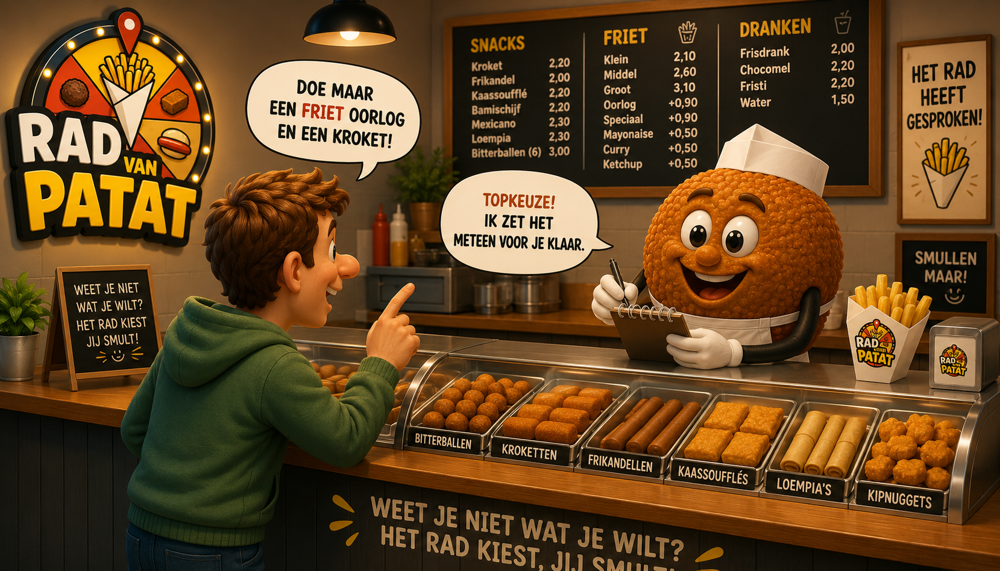
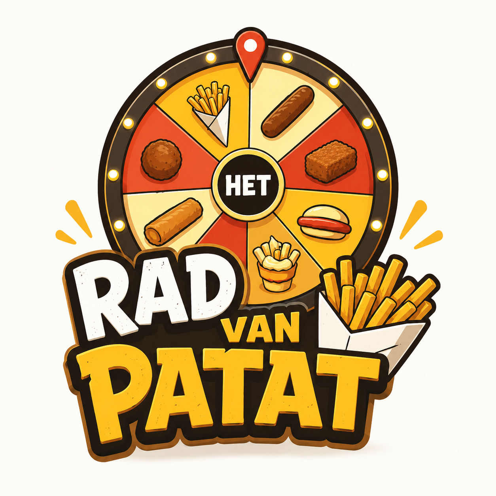

Cool he?
Wat kan er allemaal met het Rad van Patat!
Het Rad van Patat is gemaakt voor als je er even niet uitkomt. Als je even niet weet wat je nu bij je frietjes wilt. Misschien wil je wel helemaal geen friet maar wil je alleen maar snacks. Ook dat kan natuurlijk. Dit snappen wij als geen ander. Geef een slinger aan het rad en het rad helpt je bij deze zware beslissing. Geef het lot uit handen en laat het rad bepalen.

keyboard
Keyboard Shortcuts
Spin het Rad
[F5]
Snack toevoegen
[SHIFT]
+
[+]
Mijn Lijsten
[SHIFT]
+
[L]
Easter Eggs
[E]
[G]
[G]
[S]
Help
[SHIFT]
+
[?]
contact_support
Contact
Problemen of vragen? Neem contact op met de De Code Kas. We reageren meestal sneller dan je kroket kan afkoelen!
Heb je leuke suggesties dan kun je ze ook naar ons mailen. Dat is geen enkel probleem.
quiz
Veelgestelde Vragen
Hoe voeg ik eigen snacks toe? expand_more
Je kunt eenvoudig snacks toevoegen door op de knop "Snack toevoegen" te klikken. Hier kun je de naam en een afbeelding invullen.
Is het rad echt eerlijk? expand_more
Jazeker! Onze algoritmes zijn getest door professionele snack-liefhebbers. Elk segment heeft exact evenveel kans, tenzij je de "Extra Mayo" boost activeert!
Kan ik mijn resultaten delen? expand_more
Ja. Via de deelknoppen maak je een link of QR-code waarmee iemand direct precies hetzelfde Rad van Patat kan openen.
Werkt de app offline? expand_more
Nog niet. We zullen in de toekomst met een offline functionaliteit komen zodat je het rad ook offline kunt gebruiken maar tot die tijd nog niet.

Bruis je van de ideeën?
Soms is een persoonlijk antwoord het beste. Stuur ons een berichtje!